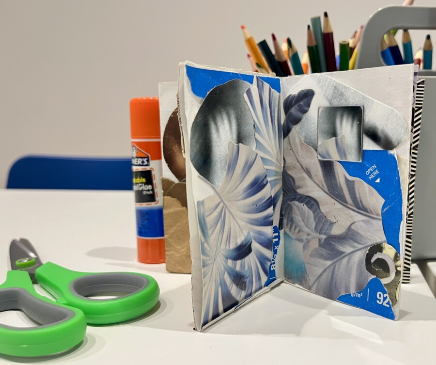

Art After Work: IAM crafting
Join visual artists Daia and Walt for a night of collaging and zine making. Inspired by the work of Della Wells and Thomas Kong, the workshop will explore collage as a form of world building and storytelling. When paired with the one-page zine, collage can be an accessible way of sharing your vision with others and bringing your internal world to life.
Join us to make something personal and learn more about Intuit Art Museum.
Free with Museum admission and for IAM members.